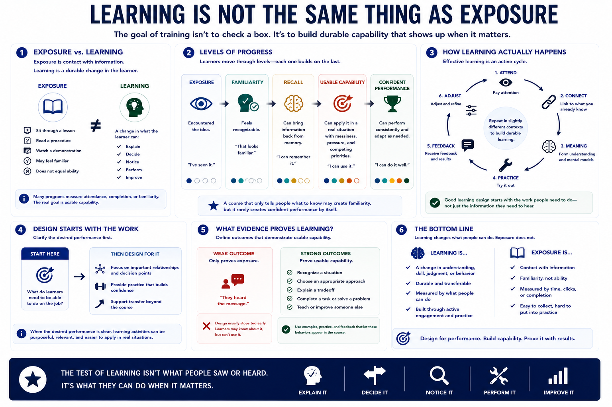

What Learning Really Means
Connecting to LMS... Progress: in progress

Narration
Learning is not the same thing as exposure. A person can sit through a lesson, read a procedure, or watch a demonstration and still be unable to use the idea later. In practical terms, learning means a durable change in understanding, skill, judgment, or behavior. Something has changed in what the learner can explain, decide, notice, perform, or improve. That difference matters because many training programs accidentally measure attendance, completion, or familiarity when the real goal is usable capability.
There are levels of progress. Exposure means the learner has encountered the idea. Familiarity means the idea feels recognizable. Recall means the learner can bring information back from memory. Usable capability means the learner can apply the idea in a real situation, with the normal messiness of time pressure, incomplete information, and competing priorities. A course that only tells people what to know may create familiarity, but it rarely creates confident performance by itself.
Effective learning is active. People pay attention, connect new information to what they already know, form meaning, practice, receive feedback, adjust, and try again in a slightly different context. Good learning design starts with the work people need to do, not just the information they need to hear. When the desired performance is clear, the lesson can focus attention on the important relationships, give learners enough practice to build confidence, and help them transfer the skill beyond the course.
A useful test is to ask what evidence would prove the learner can do the thing. If the outcome is only, they heard the message, the design will usually stop too early. If the outcome is, they can recognize a situation, choose an approach, explain a tradeoff, or complete a task, the course needs examples and practice that let those behaviors appear.